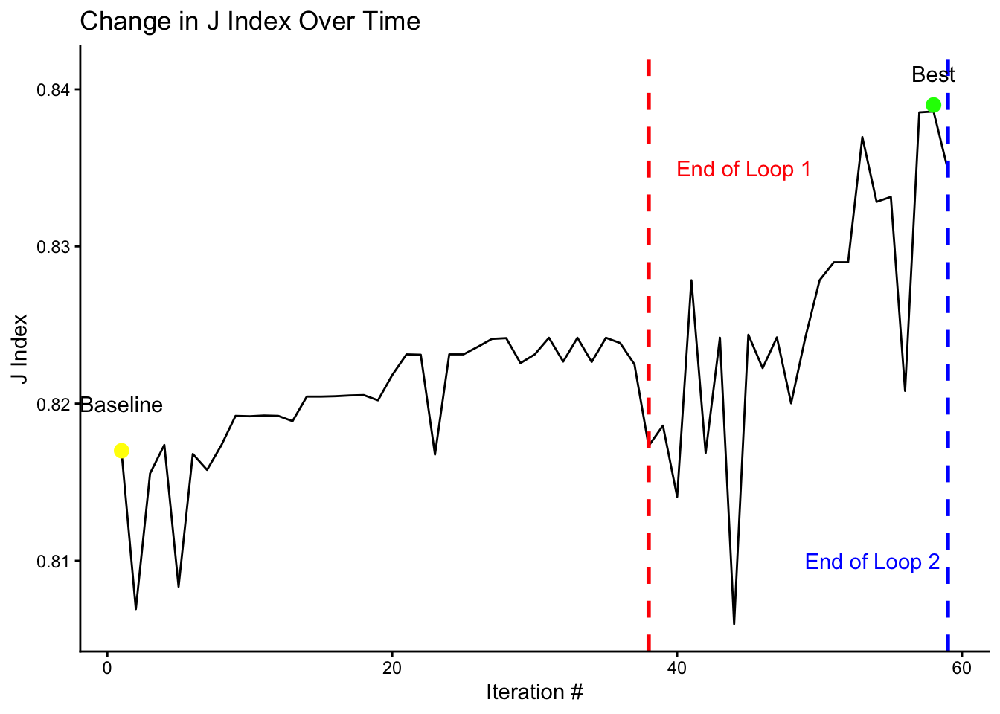

Week 5 Report
GitHub Link
https://github.com/leotesler/autoresearch_mlb_project_stat_390
Experiment Log
Metric Plot
results |>
mutate(j_index = as.numeric(j_index)) |>
ggplot(aes(x = iteration, y = j_index)) +
geom_line() +
labs(
title = "Change in J Index Over Time",
x = "Iteration #",
y = "J Index"
) +
geom_vline(xintercept = 38, linetype = "dashed", color = "red", size = 1) +
geom_vline(xintercept = 59, linetype = "dashed", color = "blue", size = 1) +
annotate("text", x = 39, y = 0.835, label = "End of Loop 1",
hjust = -0.1, color = "red") +
annotate("text", x = 48, y = 0.81, label = "End of Loop 2",
hjust = -0.1, color = "blue") +
annotate("point", x = 1, y = 0.817, size = 3, color = "yellow") +
annotate("text", x = 1, y = 0.82, label = "Baseline") +
annotate("point", x = 58, y = 0.839, size = 3, color = "green") +
annotate("text", x = 58, y = 0.841, label = "Best") +
theme_classic()Warning: Using `size` aesthetic for lines was deprecated in ggplot2 3.4.0.
ℹ Please use `linewidth` instead.
Keep/Discard/Crash Summary
results |>
mutate(
best = cummax(lag(j_index, default = 0)),
improvement = j_index - best,
category = case_when(
improvement >= 0.001 ~ "keep",
j_index > 0 ~ "discard",
TRUE ~ "crash"
)
) |>
select(iteration, j_index, category) |>
datatable()What Actually Worked
- SMOTE with tuned lasso over the iteration-31 feature set: 0.827846
- Upper-minors defensive spectrum/range features: improved to 0.828994
- Log ISO/HR/FB transforms + Low-A → High-A progression deltas: large jump to 0.836954
- High-A → AA progression deltas: improved to 0.838531
- Rookie → Low-A progression deltas: tiny improvement to final best, 0.838587
What Didn’t Work
- Raw fielding variables were noisy; removing them helped stabilize the recipe.
- Career-wide defensive spectrum/progression features dropped to 0.832840.
- Position-specific defensive share interactions dropped to 0.833152.
- Downsampling the best feature set dropped badly to 0.820807.
- SMOTE with neighbors = 3 dropped to 0.834896.
Final Model
The final model:
- Keeps the iteration-31 upper-minors offensive/age-adjusted features.
- Adds log transforms for AA/AAA ISO, HR, and FB%.
- Adds Rookie→Low-A, Low-A→High-A, High-A→AA, and AA→AAA progression deltas.
- Adds upper-minors defensive spectrum/range/share features.
- Removes raw inn_, putouts_, and assists_* fielding columns after deriving defensive features.
- Uses step_smote(success) and logistic_reg(penalty = tune(), mixture = 1).